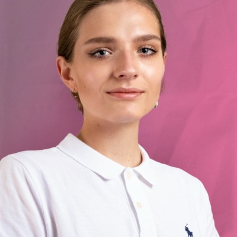

Maria Shaporeva
Email: shaporeva@usf.edu
Phone: (813) 593-1953
Summary
Hi, my name is Maria and I am a fourth-year business major at the University of South Florida. I am interested in business analysis/consulting as a possible career and I am well prepared for the internship positions.
Education
| University |
Year |
GPA |
| University of South Florida Tampa FL |
2018-2022 |
GPA 3.8 |
| BS IN BUSINESS ANALYTICS & INFORMATION SYSTEMS |
Skills
- Programming Languages : R, C#, SQL, Python, HTML
- Software : Microsoft Office – Microsoft Visio, Excel, Tableau, Photoshop, Adobe Illustrator; Power BI, SQL Server Management Studio JavaScript, React
- Soft Skills : Teamwork, Communicative, Time management, Commitment to the Job
Relevant Projects
-
Data Analytics with R
The course covered programming in R, reading data into R, accessing R packages, visualization with R, writing R functions and organizing and commenting R code. Our final team project on Stroke Prediction involved data manipulation and statistical analysis.
-
Database Design/Administration
Employed Structured Query Language to manipulate data in relational databases. Learned proper documentation for a database. Explored concepts of CRUD, SQL joins, HADR etc. Created multiple SQL projects and databases from scratch
Professional Experience
Business Analyst Intern , Intuceo, Jacksonville, FL
June 2022 to Present
- Identify, Report, and recommend actions on data quality issues
- Build analytics dashboards with tools like Tableau/ Power BI
- Write Python and SQL Code for necessary Data processing
3D Printing Lab Assistant ,Advanced Visualization Center, USF IT FL
February 2022 to Present
- Anticipated customer needs and provided them with high-quality service while upholding brand standards and values to ensure customer satisfaction.
- Developed technology solutions for medical students using various industry products and technologies
- Maintained FDM and SLA printers. Worked with slicing software such as Cura, Qidi Print, and Flashpoint
Quality Intern , USF Health FL
September 2021 to February 2022
- Imported survey results into Excel for future data analyses to find trends and patterns.
- Mastered Data Visualization Design with Excel tools.
Organizations and Certificates
- Data Science @USF
As a part of the team, worked on multiple Data Science practice projects using R and Python
- Dean’s list award for Spring 2021 and Fall 2020
- Art School 2013 – 2017
- Water Polo Team Captain 2011 – 2013
- USF Art Club
Helped in organizing painting events by posting information on social media and finding models for sessions.
- EdX: Getting Started with Python Certificate
Volunteering
Art Therapy , Longboat Key, FL
FALL 2020
Organized art parties for seniors where we drew together to relieve stress, socialize with each other, and have a good time.